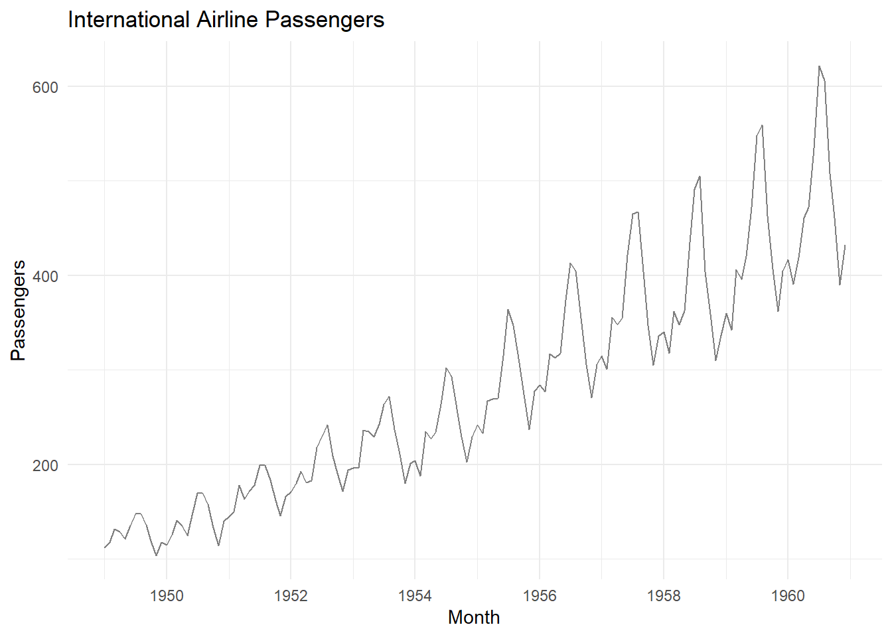
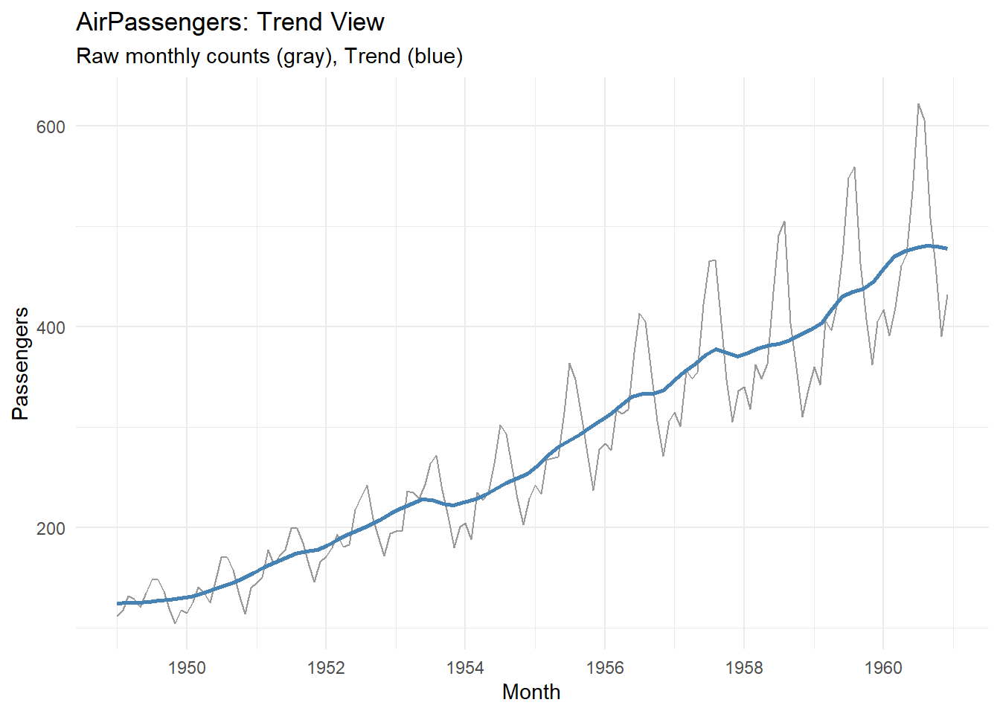
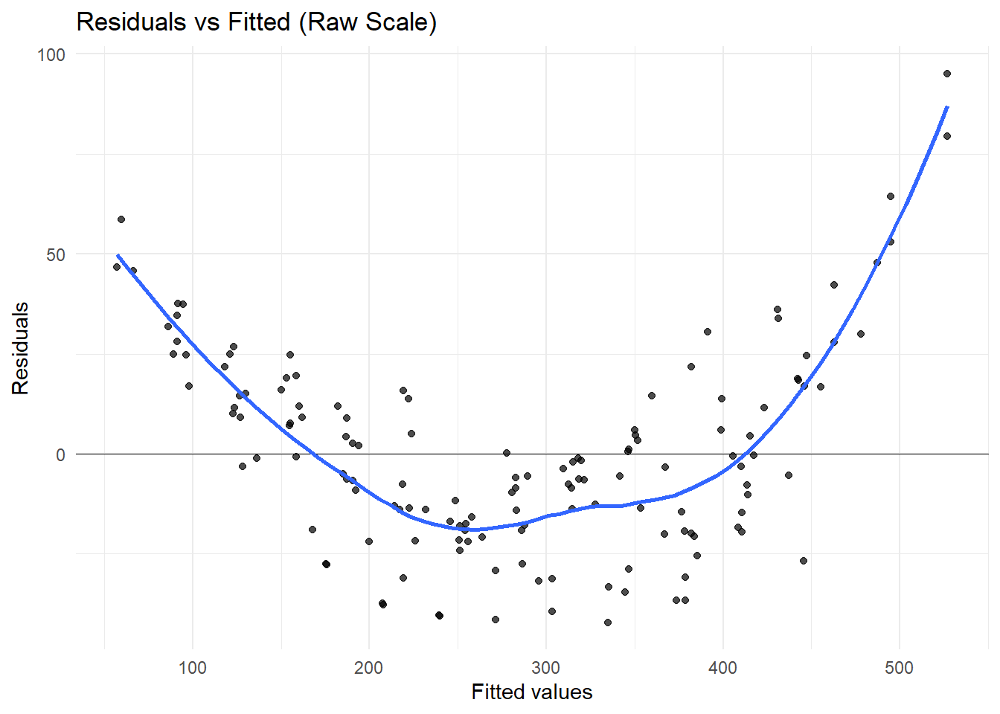

(b) Construct the time series plot and interpret it.

Trend

Seasonality
Heteroskedasticity
Hypotheses
\(H_0:\)\(\text{Heteroskedacity is not present}= (p>0.05)\)
\(H_1:\)\(\text{Hetersokedacity is present} = (p<0.05)\)
studentized Breusch-Pagan test
data: m_raw
BP = 38.889, df = 12, p-value = 0.0001097
\(H_0:\)\(\text{Heteroskedacity is not present}= (p>0.05)\)
\(H_1:\)\(\text{Hetersokedacity is present} = (p<0.05)\)
The Breush-Pagan Test showas that the data has heteroskedacity.
p= 0.0001097 < 0.05

###2. (10 points) If Var(X) = Var(Y ), find Cov(X + Y, X − Y )
(15 points) Recall: To show that a process {Yt} is not stationary, try to show that E(Yt) depends on t. If this fails, try to show that Var(Yt) depends on t. If this fails, show that γk = Cov(Yt, Yt−k) depends on t.
Let Yt = Pt i=1 et where the et are iid with E(et) = µ > 0 and Var(et) = σ2. Show that {Yt} is not stationary.
Let Yt = Pt i=1 et where the et are iid with E(et) = 0 and Var(et) = σ2 . Show that {Yt} is not stationary.
(10 points) Suppose Yt = X for all t where E(X) = µ and Var(X) = σ2.
Show that {Yt} is stationary.
Find the autocorrelation function ρk for {Yt}.
(15 points) The R output below displays the results of 10 coin flips, where 0 represents Tails and 1 represents Heads.
rbinom(10,1,0.5)
0 0 0 0 0 0 1 1 0 0
Let the et be iid where et = 1 for Heads and et = −1 for Tails (so change the 0 to a −1 from the given output. That is, e1 = e2 = e3 = e4 = e5 = e6 = −1; e7 = e8 = 1 and e9 = e10 = −1.) Let Yt = Pt t=1 et.
(a) Plot Yt on the vertical axis versus time t on the horizontal axis.
(b) The process {Yt} is a random walk with E(Yt) = 0, as shown in class. Does there seems to be a trend in the plot in (a) or are the Yt scattering about the horizontal axis in a roughly even band?
(c) Repeat parts (a) and (b) for a 100 flips and provide the plot of Yt versus t.